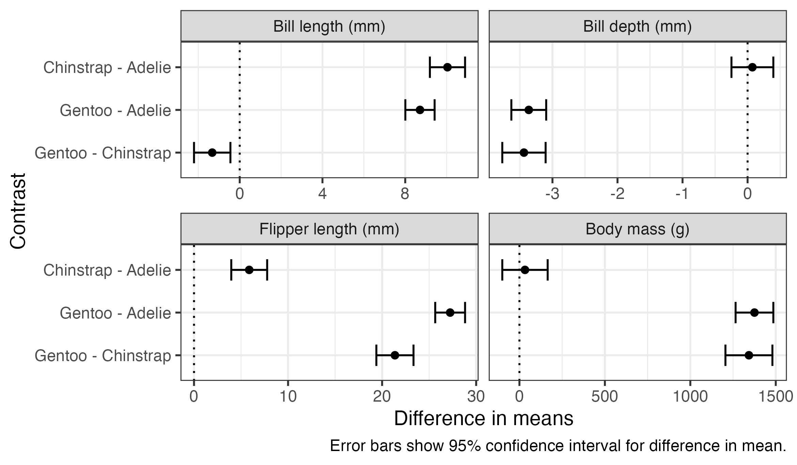

library(tidyverse)
library(gt)
library(emmeans)
library(performance)One common task in applied statistics is to fit and interpret a number of statistical models at once. For example, fitting a model with the same structure to a number of different outcome or explanatory variables, or fitting several models with different structure to the same data. Here are some examples of how I usually do this, using features that were introduced with dplyr version 1.1.0.
For this demonstration, we’ll be using the R packages dplyr, tidyr, ggplot2 (all of which are included in the tidyverse), as well as gt for making tables, emmeans for obtaining estimated means and comparisons, and performance for model-checking.
We’ll be using the Palmer Penguins data collected at Palmer Station, Antarctica, made available by Dr Kristen Gorman, and conveniently accessible in R using the palmerpenguins package. This dataset contains measurements on a number of penguins of different species on different islands.
library(palmerpenguins)
data(penguins)
head(penguins)# A tibble: 6 × 8
species island bill_length_mm bill_depth_mm flipper_length_mm body_mass_g
<fct> <fct> <dbl> <dbl> <int> <int>
1 Adelie Torgersen 39.1 18.7 181 3750
2 Adelie Torgersen 39.5 17.4 186 3800
3 Adelie Torgersen 40.3 18 195 3250
4 Adelie Torgersen NA NA NA NA
5 Adelie Torgersen 36.7 19.3 193 3450
6 Adelie Torgersen 39.3 20.6 190 3650
# ℹ 2 more variables: sex <fct>, year <int>Suppose we want to compare bill length, bill depth, flipper length, and body mass between species. We could manually run a separate model for each, but here’s a way to to automate the process. As with many things in R, the trick to doing this easily is to get the data in long form, with the outcomes stacked on top of each other, and a variable indicating which outcome is being measured.
The pivot_longer() function from tidyr gets the data into this format. I’ve also taken an extra step of recoding the “outcome” variable to give more descriptive labels. This isn’t required but it will make the tables and plots that we make later look nicer.
penguins_long <- penguins %>%
pivot_longer(
c(bill_length_mm, bill_depth_mm, flipper_length_mm, body_mass_g),
names_to = "outcome",
values_to = "value"
) %>%
mutate(
outcome = fct_inorder(outcome),
outcome = fct_recode(
outcome,
"Bill length (mm)" = "bill_length_mm",
"Bill depth (mm)" = "bill_depth_mm",
"Flipper length (mm)" = "flipper_length_mm",
"Body mass (g)" = "body_mass_g"
)
)Looking at the first few rows of this data frame, you can see we now have four rows for each penguin, one for each type of measurement:
head(penguins_long)# A tibble: 6 × 6
species island sex year outcome value
<fct> <fct> <fct> <int> <fct> <dbl>
1 Adelie Torgersen male 2007 Bill length (mm) 39.1
2 Adelie Torgersen male 2007 Bill depth (mm) 18.7
3 Adelie Torgersen male 2007 Flipper length (mm) 181
4 Adelie Torgersen male 2007 Body mass (g) 3750
5 Adelie Torgersen female 2007 Bill length (mm) 39.5
6 Adelie Torgersen female 2007 Bill depth (mm) 17.4We can use group_by() and summarise() from the dplyr package to group the rows by outcome, and then “summarise” these groups of rows down to a single row containing a statistical model for each outcome. This makes use of a couple of R tricks: ‘list columns’, a column in a data frame that contains a more complex object than the standard R data types (numeric, character, etc); and the new pick() verb which returns a data frame containing selected columns (in this case, all of them) within the group that’s being operated on.
penguin_models <- penguins_long %>%
group_by(outcome) %>%
summarise(
model = list(
lm(value ~ species, data = pick(everything()))
)
)You can see the resulting data from contains four rows, one for each outcome, and a statistical model (“lm”) for each:
print(penguin_models)# A tibble: 4 × 2
outcome model
<fct> <list>
1 Bill length (mm) <lm>
2 Bill depth (mm) <lm>
3 Flipper length (mm) <lm>
4 Body mass (g) <lm> Ideally we would also do a visual check of model assumptions. One way to do this is something like the code below, which saves a residual plot for each model to an image file, which can be inspected later. It uses the check_model() function in the performance package to generate the plots. The generated residual plots aren’t shown here, but they all look fine.
walk2(
penguin_models$outcome,
penguin_models$model,
~ ggsave(
paste0(.x, ".png"),
plot(check_model(.y, check = c("pp_check", "linearity",
"homogeneity", "qq"))),
width = 12,
height = 9
)
)Once we’ve fitted the models, we can obtain quantities of interest from them. In this example we’ll look at estimated means for each species, p-values testing the hypothesis that all species means are equal (against at least one pair of means being different), and comparisons (differences in means) between all pairs of species.
The reframe() function from dplyr allows us to run some code that produces a data frame on each model and stack the results on top of each other. We can use the emmeans() function from the emmeans package to obtain estimated marginal means and as_tibble() to convert the result into a data frame. The rowwise(outcome) at the start tells reframe() that we want to call emmeans() separately for each row of the data frame (i.e., each outcome model), and preserve the outcome variable in the result.
penguin_means <- penguin_models %>%
rowwise(outcome) %>%
reframe(
emmeans(model, "species") %>%
as_tibble()
)The first few rows of the resulting data frame are shown below. There is a row for each outcome for each species, containing the mean (emmean), standard error (SE), degrees of freedom (df) and lower and upper confidence limits (lower.CL and upper.CL).
head(penguin_means)# A tibble: 6 × 7
outcome species emmean SE df lower.CL upper.CL
<fct> <fct> <dbl> <dbl> <dbl> <dbl> <dbl>
1 Bill length (mm) Adelie 38.8 0.241 339 38.3 39.3
2 Bill length (mm) Chinstrap 48.8 0.359 339 48.1 49.5
3 Bill length (mm) Gentoo 47.5 0.267 339 47.0 48.0
4 Bill depth (mm) Adelie 18.3 0.0912 339 18.2 18.5
5 Bill depth (mm) Chinstrap 18.4 0.136 339 18.2 18.7
6 Bill depth (mm) Gentoo 15.0 0.101 339 14.8 15.2We can use ggplot() to present the results visually. The plot shows that there’s a substantial variation between species in means of all of these measurements, with little or no overlap between many of the confidence intervals. Gentoo penguins appear to be heavier, and have longer flippers but shorter and shallower bills, than the other species.
penguin_means %>%
ggplot(aes(x = emmean, y = species, xmin = lower.CL, xmax = upper.CL)) +
geom_errorbar(width = 0.5) +
geom_point() +
scale_y_discrete(limits = rev) +
facet_wrap(vars(outcome), nrow = 2, scales = "free_x") +
labs(
x = "Mean",
y = "Species",
caption = "Error bars show 95% confidence interval for mean."
)The gt() function can be used to produce a nice table of results. The code shown below combines the lower.CL and upper.CL columns to produce a single column with the confidence interval, and separately specifies fewer decimal places for body mass than the other measures. The group_by() function before gt() results in a table sub-heading for each outcome. You could easily change this to group_by(species) to arrange the results by species.
penguin_means %>%
group_by(outcome) %>%
gt() %>%
fmt_number(c(emmean, SE, lower.CL, upper.CL),
decimals = 1, use_seps = FALSE) %>%
fmt_number(c(emmean, SE, lower.CL, upper.CL),
rows = outcome == "Body mass (g)",
decimals = 0, use_seps = FALSE) %>%
fmt_number(df, decimals = 0) %>%
cols_align("left", species) %>%
cols_merge_range(lower.CL, upper.CL, sep = ", ") %>%
cols_label(
species = "Species",
emmean = "Mean",
lower.CL = "95% Confidence Interval"
)| Species | Mean | SE | df | 95% Confidence Interval |
|---|---|---|---|---|
| Bill length (mm) | ||||
| Adelie | 38.8 | 0.2 | 339 | 38.3, 39.3 |
| Chinstrap | 48.8 | 0.4 | 339 | 48.1, 49.5 |
| Gentoo | 47.5 | 0.3 | 339 | 47.0, 48.0 |
| Bill depth (mm) | ||||
| Adelie | 18.3 | 0.1 | 339 | 18.2, 18.5 |
| Chinstrap | 18.4 | 0.1 | 339 | 18.2, 18.7 |
| Gentoo | 15.0 | 0.1 | 339 | 14.8, 15.2 |
| Flipper length (mm) | ||||
| Adelie | 190.0 | 0.5 | 339 | 188.9, 191.0 |
| Chinstrap | 195.8 | 0.8 | 339 | 194.2, 197.4 |
| Gentoo | 217.2 | 0.6 | 339 | 216.0, 218.4 |
| Body mass (g) | ||||
| Adelie | 3701 | 38 | 339 | 3627, 3775 |
| Chinstrap | 3733 | 56 | 339 | 3623, 3843 |
| Gentoo | 5076 | 42 | 339 | 4994, 5158 |
We can do similar to produce an overall “F” test for each model, testing the hypothesis that all species have equal means for a particular measure against the hypothesis that at least one pair of means is different. The joint_tests() function in emmeans does this.
penguin_tests <- penguin_models %>%
rowwise(outcome) %>%
reframe(
joint_tests(model) %>%
as_tibble()
)The resulting data frame is shown below. This time there is one row per model, but if there had been multiple variables in the model, there would have been one row per variable or interaction term (distinguished by the model term column). Each row contains the results of a hypothesis test: numerator and denominator degrees of freedom (df1 and df2), F-statistics (F.ratio) and p-value (p.value).
print(penguin_tests)# A tibble: 4 × 6
outcome `model term` df1 df2 F.ratio p.value
<fct> <chr> <dbl> <dbl> <dbl> <dbl>
1 Bill length (mm) species 2 339 411. 2.69e- 91
2 Bill depth (mm) species 2 339 360. 1.51e- 84
3 Flipper length (mm) species 2 339 595. 1.35e-111
4 Body mass (g) species 2 339 344. 2.89e- 82Again, this can be presented in a table using gt():
penguin_tests %>%
gt() %>%
fmt_number(F.ratio, decimals = 1) %>%
fmt_number(p.value, decimals = 3) %>%
cols_merge_range(df1, df2, sep = ", ") %>%
sub_small_vals(p.value, threshold = 0.001) %>%
cols_label(
outcome = "Outcome",
`model term` = "Predictor",
df1 = "df",
F.ratio = "F",
p.value = "p-value"
)| Outcome | Predictor | df | F | p-value |
|---|---|---|---|---|
| Bill length (mm) | species | 2, 339 | 410.6 | <0.001 |
| Bill depth (mm) | species | 2, 339 | 359.8 | <0.001 |
| Flipper length (mm) | species | 2, 339 | 594.8 | <0.001 |
| Body mass (g) | species | 2, 339 | 343.6 | <0.001 |
Finally, we often want to obtain comparisons between particular estimated quantities. In this example we use the emmeans package again for this, this time using the pairs() function to produce comparisons between all pairs of species.
penguin_pairs <- penguin_models %>%
rowwise(outcome) %>%
reframe(
emmeans(model, "species") %>%
pairs(infer = TRUE, reverse = TRUE, adjust = "none") %>%
as_tibble()
)The first few rows of the data frame are shown below. The contents are similar to what we saw earlier for the estimated means, but this time each row contains information on a difference between pairs of means (described in the contrast column), along with the estimated difference in means, standard error, degrees of freedom, confidence interval, t-statistic and p-value.
head(penguin_pairs)# A tibble: 6 × 9
outcome contrast estimate SE df lower.CL upper.CL t.ratio p.value
<fct> <chr> <dbl> <dbl> <dbl> <dbl> <dbl> <dbl> <dbl>
1 Bill length … Chinstr… 10.0 0.432 339 9.19 10.9 23.2 4.23e-72
2 Bill length … Gentoo … 8.71 0.360 339 8.01 9.42 24.2 5.33e-76
3 Bill length … Gentoo … -1.33 0.447 339 -2.21 -0.449 -2.97 3.18e- 3
4 Bill depth (… Chinstr… 0.0742 0.164 339 -0.248 0.396 0.453 6.50e- 1
5 Bill depth (… Gentoo … -3.36 0.136 339 -3.63 -3.10 -24.7 7.93e-78
6 Bill depth (… Gentoo … -3.44 0.169 339 -3.77 -3.11 -20.3 1.59e-60These comparisons can be plotted or presented in a table using code very similar to what we used for the estimated means. The plot below also includes a dotted line indicating zero difference, which can be used as a visual indicator for whether comparisons are statistically significant.
penguin_pairs %>%
ggplot(aes(x = estimate, y = contrast, xmin = lower.CL, xmax = upper.CL)) +
geom_vline(xintercept = 0, linetype = "dotted") +
geom_errorbar(width = 0.5) +
geom_point() +
scale_y_discrete(limits = rev) +
facet_wrap(vars(outcome), nrow = 2, scales = "free_x") +
labs(
x = "Difference in means",
y = "Contrast",
caption = "Error bars show 95% confidence interval for difference in mean."
)